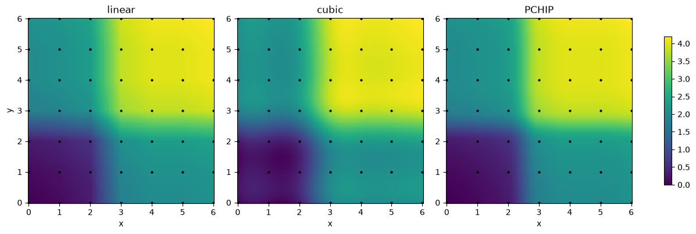
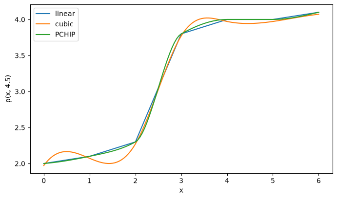
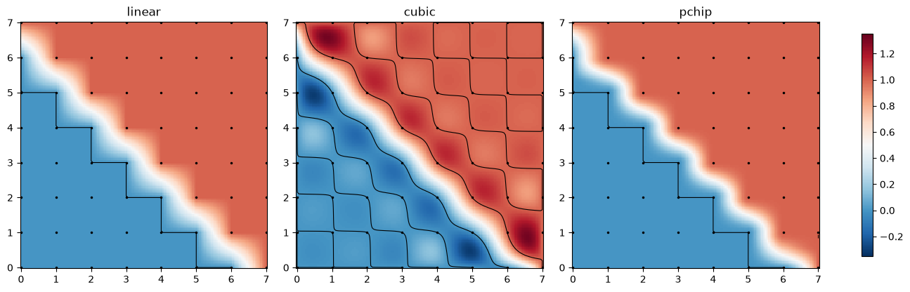
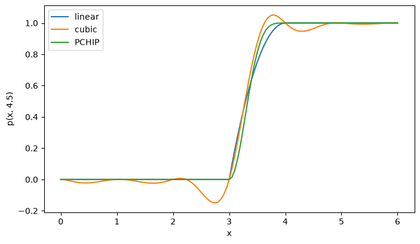

Interpolation with scipy.interpolate (2-D)#
Given data \((x_i, y_i, z_i)\), build a function \(p(x, y)\) with \(p(x_i, y_i) = z_i\) and evaluate it between the data points. As in 1-D, every method is used the same way: build once, then evaluate at as many new points as you like.
In 2-D there are two very different situations:
A. Data on a grid: a value \(z_{ij}\) at every pair \((x_i, y_j)\), e.g. a table, an image, a simulation output.
method |
call |
continuous |
local? |
overshoot? |
|---|---|---|---|---|
nearest |
|
no |
yes |
never |
linear (bilinear) |
|
\(p\) |
yes |
never |
cubic |
|
\(p\) and its derivatives |
no |
can overshoot |
PCHIP |
|
\(p\) and first derivatives |
yes |
never |
B. Scattered data: values at points \((x_k, y_k)\) with no pattern, e.g. weather stations, GPS measurements.
method |
call |
continuous |
local? |
overshoot? |
|---|---|---|---|---|
nearest |
|
no |
yes |
never |
linear (on triangles) |
|
\(p\) |
yes |
never |
cubic (Clough–Tocher) |
|
\(p\) and first derivatives |
yes |
can overshoot |
radial basis functions |
|
smooth |
no |
can overshoot |
More details: SciPy User Guide, Interpolation → Multivariate data interpolation on a regular grid and Scattered data interpolation: https://docs.scipy.org/doc/scipy/tutorial/interpolate/ND_regular_grid.html https://docs.scipy.org/doc/scipy/tutorial/interpolate/ND_unstructured.html
On a grid, the methods are the 1-D methods from last class applied along \(x\), then along \(y\) (tensor products). They behave just like their 1-D versions.
Linear, nearest, PCHIP: local and safe. Cubic: smoothest, but can overshoot.
Scattered data:
griddatasplits the plane into triangles between the data points and interpolates on each triangle. It returnsnanoutside the region covered by the triangles (the convex hull of the points).RBF builds one smooth function from all points at once. It is defined everywhere, also outside the data, so it will happily extrapolate.
The grid vectors
xandymust be increasing.Zhas shape(len(x), len(y)), withZ[i, j]the value at(x[i], y[j]).
import numpy as np
import matplotlib.pyplot as plt
import scipy.interpolate as si
---------------------------------------------------------------------------
ModuleNotFoundError Traceback (most recent call last)
Cell In[1], line 3
1 import numpy as np
2 import matplotlib.pyplot as plt
----> 3 import scipy.interpolate as si
ModuleNotFoundError: No module named 'scipy'
Grids in NumPy: meshgrid#
np.meshgrid(x, y, indexing="ij") turns two 1-D vectors into two 2-D arrays X, Y with X[i, j] = x[i] and Y[i, j] = y[j].
Then any formula in X and Y gives a table of values on the grid. Always use indexing="ij", so that Z[i, j] belongs to (x[i], y[j]), which is what RegularGridInterpolator expects.
x = np.array([0, 1, 2.])
y = np.array([10, 20, 30, 40.])
X, Y = np.meshgrid(x, y, indexing="ij")
print("X =\n", X)
print("Y =\n", Y)
print(f"shape:{X.shape}= (len(x), len(y))")
X =
[[0. 0. 0. 0.]
[1. 1. 1. 1.]
[2. 2. 2. 2.]]
Y =
[[10. 20. 30. 40.]
[10. 20. 30. 40.]
[10. 20. 30. 40.]]
shape:(3, 4)= (len(x), len(y))
Example 1: the running example, in two directions#
We take the seven heights from last class, \(h = (0, 0.1, 0.3, 1.8, 2.0, 2.0, 2.1)\), and put them along both axes: \(z_{ij} = h_i + h_j\). The surface rises in both directions and levels off. We build the four grid interpolants and evaluate them on a fine \(121 \times 121\) mesh.
x = np.array([0, 1, 2, 3, 4, 5, 6.])
y = np.array([0, 1, 2, 3, 4, 5, 6.])
h = np.array([0, 0.1, 0.3, 1.8, 2.0, 2.0, 2.1])
Z = h[:, None] + h[None, :] # Z[i, j] = h[i] + h[j], shape (7, 7)
names = ["linear", "cubic", "PCHIP"]
methods = [si.RegularGridInterpolator((x, y), Z, method=m)
for m in ["linear", "cubic", "pchip"]]
xnew = np.linspace(0, 6, 121)
Xn, Yn = np.meshgrid(xnew, xnew, indexing="ij")
Xd, Yd = np.meshgrid(x, y, indexing="ij") # data locations, for plotting
fig, axs = plt.subplots(1, 3, figsize=(12, 3.8), constrained_layout=True)
for ax, name, p in zip(axs, names, methods):
im = ax.pcolormesh(Xn, Yn, p((Xn, Yn)), shading="auto", vmin=0, vmax=4.2)
ax.plot(Xd, Yd, "k.", ms=4)
ax.set_title(name); ax.set_aspect("equal"); ax.set_xlabel("x")
axs[0].set_ylabel("y")
fig.colorbar(im, ax=axs, shrink=0.8)
plt.show()

On a picture of the whole surface the smooth methods look almost the same. A slice at a fixed \(y\) shows the differences more clearly: it is a 1-D curve, like last class. We cut at \(y = 4.5\), between two grid lines.
ycut = 4.5
pts_cut = np.column_stack([xnew, np.full_like(xnew, ycut)]) # points (x, 4.5), shape (121, 2)
fig, ax = plt.subplots(figsize=(8, 4.5))
for name, p in zip(names, methods):
ax.plot(xnew, p(pts_cut), label=name)
ax.set_xlabel("x"); ax.set_ylabel(f"p(x, {ycut})")
ax.legend()
plt.show()

As in 1-D we check two things on the fine mesh:
range: do the values stay inside \([\min z, \max z] = [0, 4.2]\)?
monotone: the data never decrease in \(x\) or in \(y\), so does the surface also never decrease in both directions?
print(f"{'method':9s} {'min':>8s} {'max':>8s} never decreases?")
for name, p in zip(names, methods):
V = p((Xn, Yn))
increasing = (np.all(np.diff(V, axis=0) >= -1e-12) # along x
and np.all(np.diff(V, axis=1) >= -1e-12)) # along y
print(f"{name:9s} {V.min():8.4f} {V.max():8.4f} {increasing}")
method min max never decreases?
linear 0.0000 4.2000 True
cubic 0.0000 4.2000 False
PCHIP 0.0000 4.2000 True
Linear and PCHIP keep the shape of the data: they stay in range and never decrease.
Cubic is the smoothest, but it goes down in places although the data only go up, exactly like the cubic spline in 1-D.
Example 2: a cliff#
Now the data jump from 0 to 1 across the diagonal \(x + y = 7\), like the edge of a plateau. Smooth methods have to bend through this jump, and that is where overshoot appears.
x2 = np.arange(8.)
y2 = np.arange(8.)
X2, Y2 = np.meshgrid(x2, y2, indexing="ij")
Z2 = np.where(X2 + Y2 >= 7, 1.0, 0.0) # 0 below the diagonal, 1 above
xnew2 = np.linspace(0, 7, 141)
Xn2, Yn2 = np.meshgrid(xnew2, xnew2, indexing="ij")
fig, axs = plt.subplots(1, 3, figsize=(13, 4), constrained_layout=True)
for ax, m in zip(axs, ["linear", "cubic", "pchip"]):
V = si.RegularGridInterpolator((x2, y2), Z2, method=m)((Xn2, Yn2))
im = ax.pcolormesh(Xn2, Yn2, V, shading="auto", cmap="RdBu_r", vmin=-0.35, vmax=1.35)
ax.contour(Xn2, Yn2, V, levels=[0, 1], colors="k", linewidths=0.8)
ax.plot(X2, Y2, "k.", ms=3)
ax.set_title(m); ax.set_aspect("equal")
fig.colorbar(im, ax=axs, shrink=0.9)
plt.show()
for m in ["linear", "cubic", "pchip"]:
V = si.RegularGridInterpolator((x2, y2), Z2, method=m)((Xn2, Yn2))
print(f"{m:7s} min = {V.min():.4f} max = {V.max():.4f}")

linear min = 0.0000 max = 1.0000
cubic min = -0.3125 max = 1.3220
pchip min = 0.0000 max = 1.0000
The black lines are the levels 0 and 1. Linear and PCHIP stay in \([0, 1]\): away from the cliff they are exactly 0 or 1.
Cubic dips well below 0 on the low side and rises well above 1 on the high side, by about 30 %. The ripples spread away from the cliff because the cubic is not local.
For data with jumps or flat parts, prefer
"pchip"(or"linear").
A slice at \(x=y\) shows the differences more clearly.
# diagonal cut
pts_cut = np.column_stack([xnew,xnew])
fig, ax = plt.subplots(figsize=(8, 4.5))
for name, m in zip(names, ["linear", "cubic", "pchip"]):
p = si.RegularGridInterpolator((x2, y2), Z2, method=m)
ax.plot(xnew, p(pts_cut), label=name)
ax.set_xlabel("x"); ax.set_ylabel(f"p(x, {ycut})")
ax.legend()
plt.show()

Example 3: accuracy on a smooth function#
Sample \(f(x, y) = \sin x \cos y\) on an \(n \times n\) grid over \([0, 2\pi]^2\) and compute the maximum error \(\max |p - f|\) on a fine \(201 \times 201\) mesh.
def f(x, y):
return np.sin(x) * np.cos(y)
xf = np.linspace(0, 2*np.pi, 201)
Xf, Yf = np.meshgrid(xf, xf, indexing="ij")
print(f"{'n':>4s}" + "".join(f"{name:>12s}" for name in names))
for n in [6, 11, 21, 41]:
xs = np.linspace(0, 2*np.pi, n)
Xs, Ys = np.meshgrid(xs, xs, indexing="ij")
Zs = f(Xs, Ys)
errs = []
for m in ["linear", "cubic", "pchip"]:
p = si.RegularGridInterpolator((xs, xs), Zs, method=m)
errs.append(np.max(np.abs(p((Xf, Yf)) - f(Xf, Yf))))
print(f"{n:4d}" + "".join(f"{e:12.2e}" for e in errs))
n linear cubic PCHIP
6 3.31e-01 7.15e-02 2.74e-01
11 9.10e-02 3.50e-03 6.23e-02
21 2.39e-02 2.60e-04 7.17e-03
41 5.88e-03 3.59e-05 1.78e-03
Cubic is the most accurate, and its error falls fastest as \(n\) grows.
Linear: doubling the points per direction cuts the error by about 4 (\(O(h^2)\)).
Note the cost: an \(n \times n\) grid has \(n^2\) points. Going from \(n = 21\) to \(n = 41\) means about 4 times as much data. In 2-D, a more accurate method saves a lot more than in 1-D.
Example 4: scattered data#
Now the data are at 100 random points in \([0, 2\pi]^2\), again from \(f(x, y) = \sin x \cos y\).
There is no grid, so RegularGridInterpolator cannot be used. We use griddata and RBFInterpolator.
si.griddata(pts, z, (Xn, Yn), method=...)builds and evaluates in one call.ptshas shape(N, 2), one row \((x_k, y_k)\) per point.si.RBFInterpolator(pts, z)builds; it is evaluated at points of shape(M, 2). To evaluate on a mesh, flatten the mesh into points and reshape the result back.
rng = np.random.default_rng(1) # fixed seed: same "random" points every run
pts = rng.uniform(0, 2*np.pi, size=(100, 2))
z = f(pts[:, 0], pts[:, 1])
xnew4 = np.linspace(0, 2*np.pi, 101)
Xn4, Yn4 = np.meshgrid(xnew4, xnew4, indexing="ij")
V_lin = si.griddata(pts, z, (Xn4, Yn4), method="linear")
V_cub = si.griddata(pts, z, (Xn4, Yn4), method="cubic")
rbf = si.RBFInterpolator(pts, z)
V_rbf = rbf(np.column_stack([Xn4.ravel(), Yn4.ravel()])).reshape(Xn4.shape)
fig, axs = plt.subplots(1, 4, figsize=(16, 3.8), constrained_layout=True)
panels = [("exact f", f(Xn4, Yn4)), ("griddata linear", V_lin),
("griddata cubic", V_cub), ("RBF", V_rbf)]
for ax, (title, V) in zip(axs, panels):
im = ax.pcolormesh(Xn4, Yn4, V, shading="auto", cmap="RdBu_r", vmin=-1.2, vmax=1.2)
ax.plot(pts[:, 0], pts[:, 1], "k.", ms=3)
ax.set_title(title); ax.set_aspect("equal")
fig.colorbar(im, ax=axs, shrink=0.8)
plt.show()

The white areas in the griddata pictures are nan: those points lie outside the triangles, so griddata refuses to answer. RBF fills the whole square.
To compare the methods fairly we measure the error only where griddata gives a value. With scattered points the maximum error is dominated by a few long, thin triangles near the edge, so we also print the root-mean-square (RMS) error, a typical error over the mesh.
F = f(Xn4, Yn4)
inside = ~np.isnan(V_lin) # True where griddata has a value
print(f"points outside the triangles: {100 * (~inside).mean():.1f} %\n")
print(f"{'method':16s} {'max err':>9s} {'RMS err':>9s} (inside only)")
for name, V in [("griddata linear", V_lin), ("griddata cubic", V_cub), ("RBF", V_rbf)]:
e = np.abs(V - F)[inside]
print(f"{name:16s} {e.max():9.3f} {np.sqrt(np.mean(e**2)):9.3f}")
e_out = np.abs(V_rbf - F)[~inside]
print(f"\nRBF outside the triangles: max err = {e_out.max():.3f}")
points outside the triangles: 19.6 %
method max err RMS err (inside only)
griddata linear 0.414 0.078
griddata cubic 0.146 0.017
RBF 0.168 0.018
RBF outside the triangles: max err = 0.930
griddatagives no answer near the corners and edges of the square. Usefill_value=...to choose what is returned there instead ofnan.Cubic and RBF are about equally accurate inside, and both are much better than linear (RMS error about 4 times smaller).
RBF does answer outside the data, but there it is extrapolating. Its error is larger there: be careful trusting values far from any data point.
Exercises#
Syntax for each method
Data on a grid, Z of shape (len(x), len(y)):
method |
build |
evaluate on a mesh |
|---|---|---|
linear |
|
|
cubic |
|
|
PCHIP |
|
|
Scattered data, pts of shape (N, 2) and z of shape (N,):
method |
build |
evaluate on a mesh |
|---|---|---|
linear |
(none) |
|
cubic |
(none) |
|
RBF |
|
|
useful extra |
call |
|---|---|
\(n\) equally spaced points on \([a, b]\) |
|
a mesh from two vectors |
|
sample a function on the mesh |
|
\(N\) random points in \([a, b]^2\) |
|
sample a function at those points |
|
evaluate at a few single points |
|
value instead of |
|
checking a surface |
call |
|---|---|
smallest and largest value (ignoring |
|
maximum error against a known \(f\) |
|
where is there a value? |
|
number of |
|
plotting |
call |
|---|---|
a row of |
|
colour plot of a surface |
|
same colour scale on all plots |
|
colour bar |
|
contour lines |
|
plot the data points |
|
equal scale on both axes |
|
a slice at fixed \(y = c\) (1-D curve) |
|
Exercise 1. The Franke function on \([0, 1]^2\), a standard test surface with two peaks and a dip:
def franke(x, y):
return (0.75 * np.exp(-((9*x - 2)**2 + (9*y - 2)**2) / 4)
+ 0.75 * np.exp(-(9*x + 1)**2 / 49 - (9*y + 1) / 10)
+ 0.50 * np.exp(-((9*x - 7)**2 + (9*y - 3)**2) / 4)
- 0.20 * np.exp(-(9*x - 4)**2 - (9*y - 7)**2))
(a) Sample it on a \(10 \times 10\) grid (np.linspace(0, 1, 10) in each direction). Interpolate with the three grid methods.
Evaluate on a finer mesh of \(101 \times 101\) points and plot the three results next to the exact function, with the same colour scale.
(b) Print the maximum error for each method. Repeat with \(n = 5, 10, 20, 40\) points per direction and make an error table as in Example 3. Which method wins? By what factor does the linear error drop when \(n\) doubles?
# Exercise 1
Exercise 2. Twelve weather stations in a \(100 \times 100\) km region measure the temperature (°C). Station 12 is on a mountain top.
sx = np.array([10, 30, 55, 80, 15, 40, 65, 85, 20, 50, 75, 45.]) # km east
sy = np.array([15, 10, 20, 15, 45, 40, 50, 45, 80, 75, 85, 60.]) # km north
T = np.array([14.2, 15.1, 13.8, 12.9, 11.5, 9.8, 6.2, 11.8, 10.4, 8.9, 10.1, 3.5])
pts = np.column_stack([sx, sy])
(a) Make a temperature map on a mesh of \(201 \times 201\) points over \([0, 100]^2\) with griddata (linear and cubic) and with RBFInterpolator. Plot the three maps with the stations marked.
(b) Print the smallest and largest temperature of each map (np.nanmin, np.nanmax). The measurements are between 3.5 and 15.1 °C. Which methods go outside this range?
# Exercise 2
sx = np.array([10, 30, 55, 80, 15, 40, 65, 85, 20, 50, 75, 45.]) # km east
sy = np.array([15, 10, 20, 15, 45, 40, 50, 45, 80, 75, 85, 60.]) # km north
T = np.array([14.2, 15.1, 13.8, 12.9, 11.5, 9.8, 6.2, 11.8, 10.4, 8.9, 10.1, 3.5])
pts = np.column_stack([sx, sy])